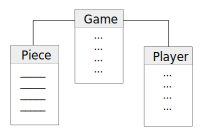

Chess Question
We are going to build a chess game. These questions are designed to specifically test your understanding of inheritance, scope, embedded loops, and if you can think in code.
You'll be asked to use psuedo code, so the language isn't important.
- Provided in front of you is a list of classes we have used to start organizing the information needed to get started.
How would you complete the "piece class" and beyond?

NOTE: If they complete the info for the piece class and stop, prod them to "keep going"
(GRADING CRITERIA)
- No subclasses present and needs lots of help
- With a little help, they list methods and attributes for "piece class" only (no subclasses present)
- They list subclasses but can't fill in all the methods and attributes.
- They list all related attributes and methods for piece class and subclasses for each piece and both players.
- To find where a player can move, we have started a method named "spotOccupiedByOpponent()" using pseudo code, complete the method:
spotOccupiedByOpponent(intX, intY){
get Array of opponent's pieces
forEach(opponent piece){
get that piece's location
if(opponent piece X === intX && opponent piece Y === intY){
return true;
}
}
}
(GRADING CRITERIA)
- Can't write or explain how it works, even with help.
- Can explain how it works with a lot of help.
- Can write and explain with a little help.
- Can write and explain with no help
- We have begun another method to find the available moves for a Knight.
Using pseudo code, complete the method:
availableMovesForKnight(){
get knightCurrentLocation;
get howKnightMoves;
(knightCurrentLocation + howKnightMoves) push each X,Y to moveableSpotsArray;
forEach(moveable spot){
if(spot is occupied by a piece of mine)
remove from Array
}
return Array
}
}
(GRADING CRITERIA)
- Can't write or explain how it works, even with help.
- Can explain how it works with a lot of help.
- Can write and explain with a little help.
- Can write and explain with no help